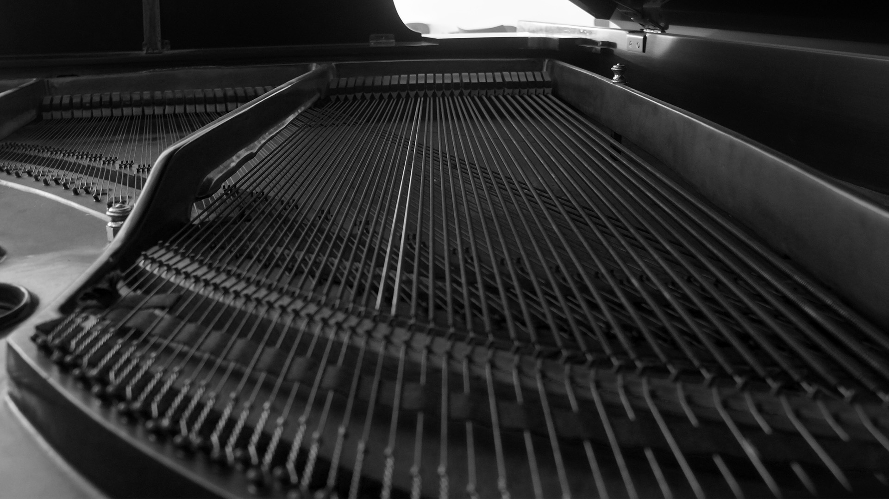

This is my first cropped image. I added a hue of orange to match the theme of firefighting
and add more drama. The photo’s dimensions were changed from landscape to 5"x7".

This is my second cropped image. Originally shot in landscape, I resized it to 1920x1080
and converted it to black and white to emphasize drama. The piano strings remain a strong
visual focal point.